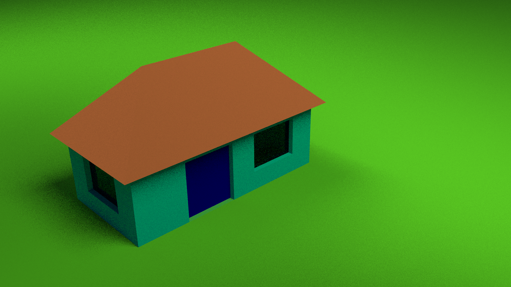
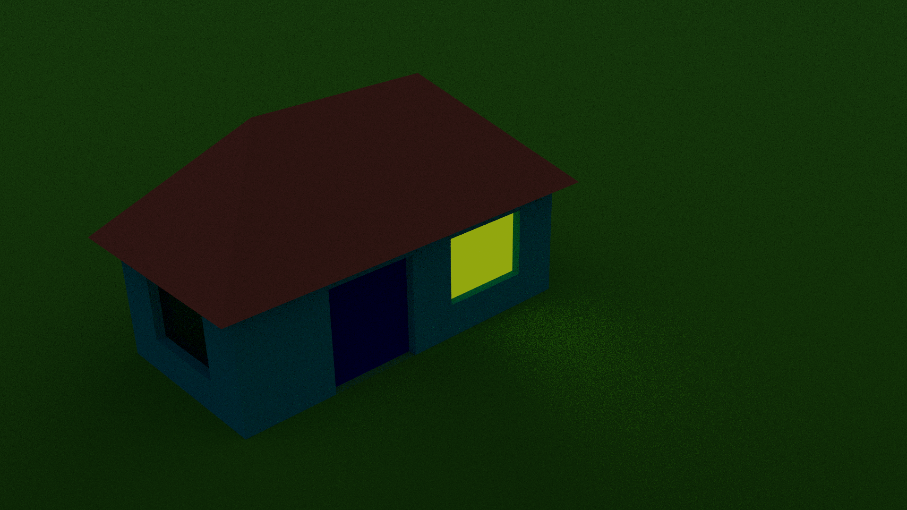

This is result of my first experience with blender.
Well, this is one of my first models entirely created using blender. First, I've created geometry using simple Blender manipulations such as scaling, rotating, extruding and subdividing. Then I've added some materials and rendered everything with a Cycles renderer.
The walls and everything are duffuse, and the windows are glassy. They are dark because there is no light inside the house.
Then I've tried to create a shining window. So the Emission shader was used, but the window now looks quite unnatural. Maybe, I'll have more time to play around with Blender and create some new models.

